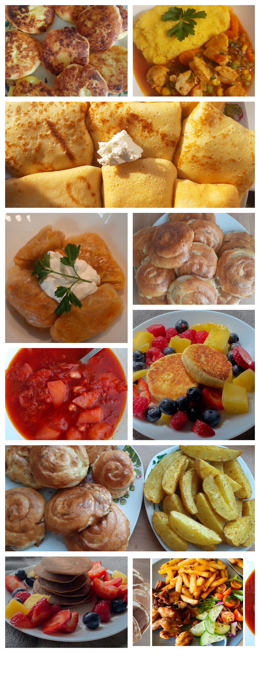

Pagina „Hrană pentru suflet” a fost creată datorită pasiunii mele pentru gătit.
Această pasiune vine de la bunica mea, care m-a învățat să gătesc începând cu vârsta de 4 ani.
Devenind mare, am început să dezvolt această pasiune a mea, învățând și încercând mereu să fac ceva nou.
Acum am 21 de ani și sunt studentă la Universitatea de Vest din Timișoara, Facultatea de Economie și de Administrare a Afacerilor, specializarea Informatică Economică.
Îmi place foarte mult să gătesc mâncare tradițională moldovenească, dar și să încerc câte ceva din bucătăria străină.
Puteți vedea mai jos ce am gătit din bucătăria tradițională moldovenească. Sper mult să vă placă. Aceste rețete le veți găsi în secțiunea „Rețete” din MENIU.
